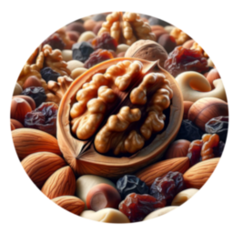

Making things annersd.
Rethinking common concepts to make them better.
Everyone said it didn’t work — then someone who didn’t know that came along and just did it.
On the power of not knowing better: The Role of Ignorance in Innovation ↗ · GitHub ↗
At the crossroads of experience and innovation, we find new solutions to old problems. Our team values fresh eyes and unorthodox approaches, breaking down barriers that once seemed insurmountable. Witness a new era of problem-solving with us.
Your Claude subscription as a local OpenAI- & Anthropic-compatible API — through the genuine Claude Code CLI, never a third-party proxy. Includes a VS Code model provider.